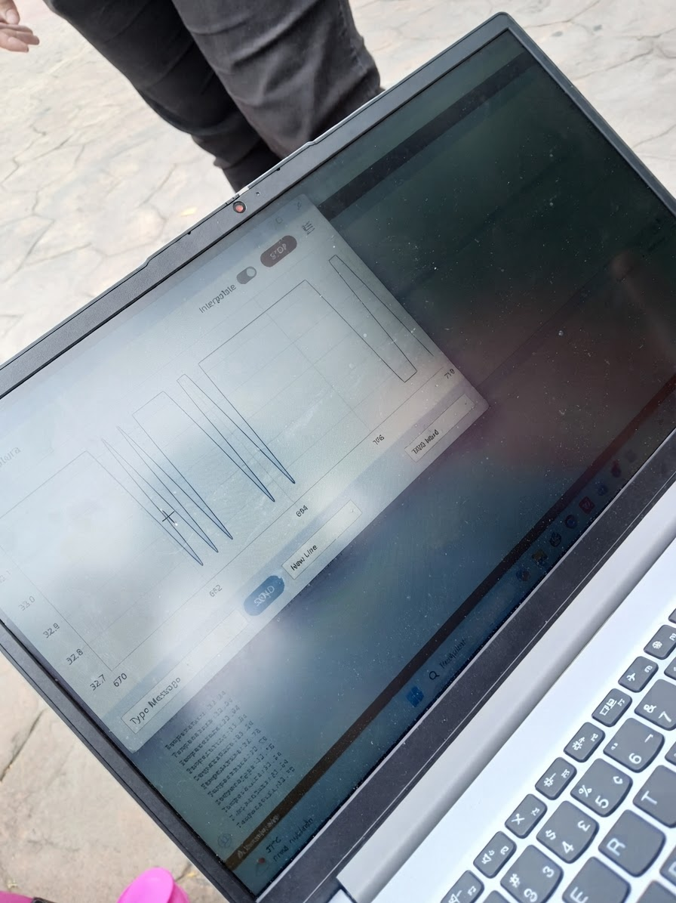
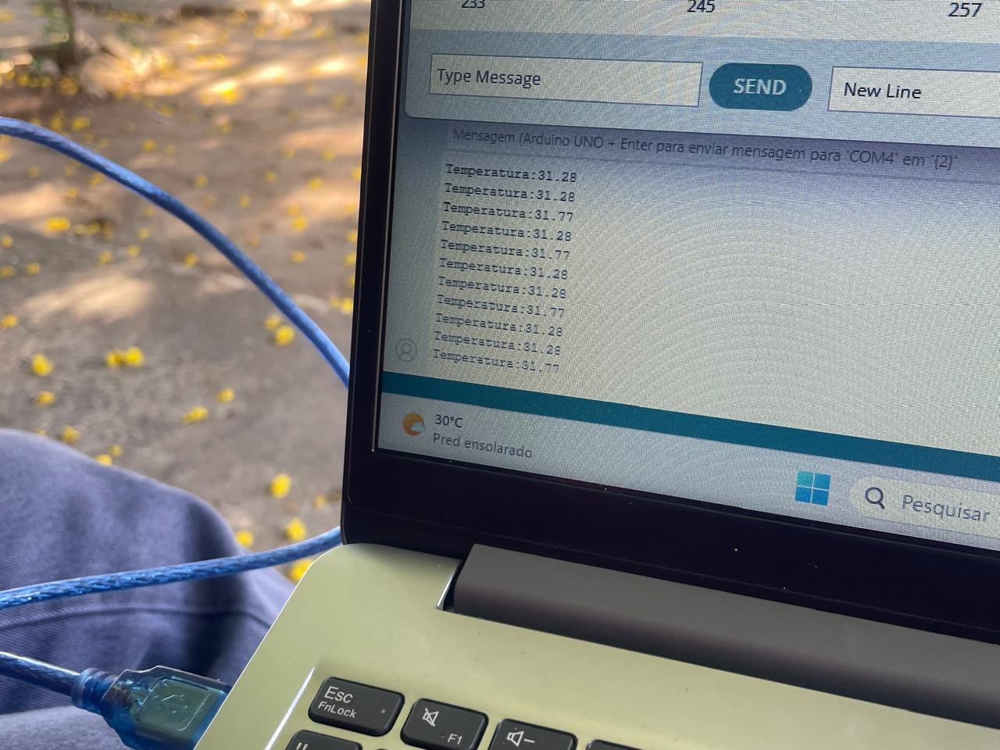
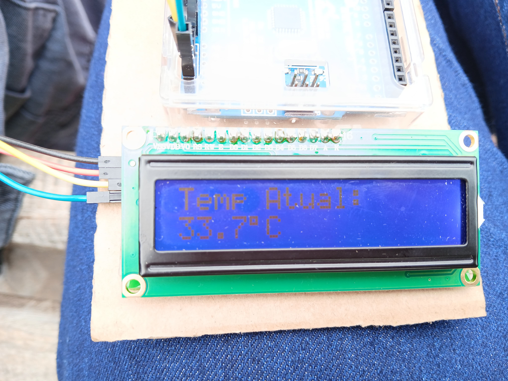
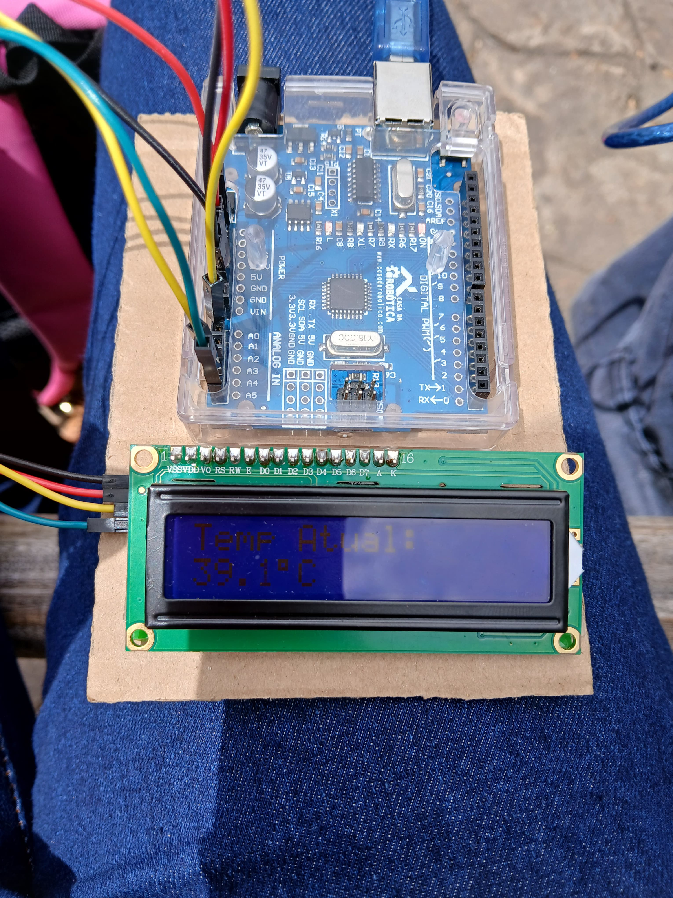

Sobre os dados coletados
Realizamos medições de temperatura e umidade do ar em diferentes regiões de Jequié, comparando locais com árvores e áreas sem vegetação. Os resultados mostram a diferença de clima entre esses ambientes.
Os dados foram registrados em horários parecidos, garantindo uma comparação justa entre os pontos estudados.
📈 Gráficos dos Resultados
Variação da temperatura

Monitoramento Térmico

📸 Registros de Campo
Área arborizada (Ceep Regis Pacheco)

Área sem cobertura vegetal (Praça Ruy Barbosa)
